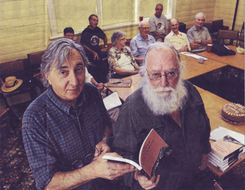

|
|


150 Motets : Homer Rieth

{kind=link}
| |
Book Description
When as God’s novice, I lay in my cell thinking, night after night
of that cape, the one Zhivago put around her shoulder—
of his arm encircling her waist, as slender as the bell light
of snow on her sleeve, in the plaits of her hair—and now I am older
but no wiser, for it seems I still lie awake at night
thinking of that cape, the one he put around her shoulder—
of that cape, the one Zhivago put around her shoulder—
of his arm encircling her waist, as slender as the bell light
of snow on her sleeve, in the plaits of her hair—and now I am older
but no wiser, for it seems I still lie awake at night
thinking of that cape, the one he put around her shoulder—
Motet: a composition adapted to
sacred words in the elaborate polyphonic church style; an emblem.
Addressed to and inspired by the time-honoured figure of a mistress or
muse, Homer Rieth’s sonnets cascade into each other across rocks of
autobiography, memory and desire. From the young man’s yearning for the
religious life to the poet’s mature ruminations he sings to his
American Lola and to us. His unaccompanied voice becomes its own choir.
Rieth’s
poems often read like overheard private rhapsodies, in which the arcane
and everyday mingle. He employs an ebullient, rococco language in long,
breathless sentences.
Geoffrey Lehmann and Robert Gray, Australian Poetry Since 1788
That
Homer Rieth is one of the finest lyric poets writing in Australia was
apparent with the publication in 2001 of his collection -"The
Dining Car Scene".
ISBN 9781876044794
Published 2013
186 pages
$24.94
1 So it is, the answers ask and the questions tell— is this the silhouette of a pond, whose stillness is supreme, the limen of silence, whose woodbine spell fills the clearing, whose only sound is that of the stream— was it the soft pressure of release, the peerless touch of a child’s hand sending forth a paper boat— was it anything so particular, a moment of such centrality, as you might say, of this alone he wrote— or was it where a chair waits in vain for the sitter, the table for a voice, the wine in its provenance and the sitter, too, for that strange other, whose glass stands untouched—who with a mere motion of the hand might give back to the raging galaxy, without regret, one faint star—the brightest among so many.
2
I remember her saying that in Podolia there is a woodwhere Paderewski used to walk as a child, among wild flowers— and that where the moraine meets the sky—as if it stood on tip toe, in the after-glow of the oxen-horn hours and the eskers darken more deeply at evening, across the gloomy Carpathians, over the pool of Stettin there came a music not of this world—but of its leaving— among the nine orders of angels, intimations of another heaven— no less the other, too, is a celestial music—a glissando that is almost soundless, that vanishes in a drift of brume or mist, of everglade and blackthorn and marshgrass over the marmoreal stream—when the snow melts and the ice thaws—so too, one may hear at another table, a voice greeting and being greeted, a hand, given, that is not in yours. 3 Can it be that so much perfection is a mistake of a kind, an offence against nature, even in divinity?— that for this is the rosebud born, to be a betrayal of the mind in whose possession the rose approaches infinity— in whose surmise there is only the one rose to which all roses aspire—and such that no bright ecstasies of spring could give rise to, or explain it—or so, at least, one supposes of the impossibly beautiful, that it could be a fatal thing— and yet, there is in the wild grape, in the orange blossom a threshold of wind, a sudden wild incandescence beyond which the rose dares not go— such visions of your face I have—and of your witching hair, its curls of rain, curls of fire—how elusive love is, how impalpable the other, and yet, how steadfast all beauty. 4 In the beginning, his Preludes—to where one has arrived as to a controlled obsession—the first, so sudden and full of surges, and yet so brief—its current deep, its ambit still untried— a falling back, a blazing forth of curses not for love’s sake, but for memory’s—the more desired the more despaired of—as if the courtois of the polonaise had lit in Chopin’s mind a melancholy fire of judgement and forgiveness—those long slow bars of the ‘Raindrop’—the gloom of that one insistent note, as if a stay of execution, a reprieve might yet be won— O sweet songbirds, George Sand, Jane Sterling go tell Lola, she who is so ardent and wise and says ‘N’et’: her resolutions are alive in the Nocturnes— Ashkenazy’s—I listen to them often, I will send her the same. 5 You could say, perhaps, that at Chiavari, at Santa Margherita or at Portofino I came of age, entered into my own— my whole life, if it were scored, would be a partita, half-Vaughan Williams, half-Bach, a scattering of the Stones— I am drunk with the sobriety of your reserve, its unspoken repulsion, the strange pull and un-attraction of age— and yet, the transit of Venus endures, continuing unbroken but as always, in a new vein, on a new page— once, at Rapallo, I might have met Olga and Ezra Pound— but found instead a fisherman’s daughter, working at her father’s nets: it was ’78, and all I had left was a suitcase full of woes— in the cleft of her throat lay a crucifix as she kissed me, and the sea was a furnace—the Otis elevator took the floors like candy—we woke to hear it was a Polish pope. * * * 19
When as God’s novice, I lay in my cell thinking, night after night of that cape, the one Zhivago put around her shoulder— of his arm encircling her waist, as slender as the bell light of snow on her sleeve, in the plaits of her hair—and now I am older but no wiser, for it seems I still lie awake at night thinking of that cape, the one he put around her shoulder— of his arm encircling her waist—as if to put to flight the glacial weather—and if only to hold her forever under the willow tree, and the hop bush of intoxicate green—‘so better spread the cape’ he thought ‘flat on the ground’—and in that burning snowdrift they moved towards something that moves off the page— ‘for this is my body’ she might have said— and God’s novice knew he would return to the world. |      © |
Top of Page
Reviews
Although the Melbourne publisher Black Pepper has a stable of major
Australian poets (Stephen Edgar and Jennifer Harrison among them), it
is also a house that likes to take chances. The favourable reception
accorded Homer Rieth’s 359-page epic poem, Wimmera,
in 2009 was definitely a punt that paid off. The book was shortlisted
for The Age Book of the Year and became an ABC television program.
Rieth’s new book, 150 Motets, though shorter, may be even riskier.
It is a hard book to categorise. Sonnet sequence (cf. Shakespeare’s)? Epic with muse (Dante’s Divina Commedia and Petrarch’s Il Canzoniere)? Spiritual autobiography (Kazantzakis’s Report to Greco)? Daybook (Thoreau’s Walden)? All of these are possible descriptions. Apart from ‘Slaying the Dragon’, a short prose memoir of visiting the monasteries at Mount Athos in Greece, Rieth’s collection comprises (pace the title) 154 sonnets, which are also called, with some justification, ‘motets’. A motet is remarkable for its polyphony and rep¬etition, and these are indeed important dimensions of the book.
Technically, the sonnets are somewhat frustrating; they consist, almost always, of a strictly rhymed octet and an unrhymed sestet. The virtues of establishing a strict convention in the first part of a poem and then abandoning it in the second are not obvious. Although a few of the sonnets appear to use the pentameter normally associated with the form, most of Rieth’s lines are far longer and are best seen as free verse. The combination of free verse and strict rhyme in the sonnet’s first eight lines can lead, quite often, to a certain awkwardness of tone.
Similarly, long epistolary sequences addressed to a muse (or patron) are always hard to carry off. Rieth’s ‘Lola’, like Shakespeare’s Mr W.H., is a fairly shadowy figure, despite the vivid-enough reminiscences of times spent together. Like other muses, Lola is inaccessible, perhaps in this case more due to geography than to anything else.
There are moments when Rieth shows uncertainty about his ambitious project. One is when he refers to his efforts as a ‘wilderness of words’. He wonders elsewhere if the readers of his ‘little book’ will be ‘of mind to set sail / upon a boat as frail as this?’ Poem ‘126’ opens with the line: ‘Sometimes I’m tempted to say too little.’ With his somewhat expanded sonnets, this is a temptation to which the poet rarely succumbs. Rieth’s use of the longer line also seems to encourage him into prophetic stances, reminiscent of Walt Whitman in Leaves of Grass (1855) or Kahlil Gibran in The Prophet (1923). If 150 Motets is a spiritual autobiography, it is also something of a theological exegesis. Though Rieth uses the word ‘soul’ as if it were unproblematic, he does give even the agnostic reader a convincing sense of a lifelong spiritual quest and of the author’s need to look beyond simple dogma into something less easily defined.
A few more lines from poem ‘126’ may serve to illustrate both the difficulties and the strengths of Rieth’s approach. He tells Lola that ‘saying nothing really is / the only way to understand, what otherwise would seem absurd, / as if, finally, knowing everything means nothing - no more than to exist // could equate to this, to say that one lives - that one is, in the end, alone - / inconspicuous, inconsequential, short-lived as weather, as are the barn swallows / in the autumn air...’ Instructive here is the manner in which the poet rescues himself from abstraction with the telling image of ‘the barn swallows / in the autumn air...’ One is, however, reminded at the same time of Wallace Stevens’s ‘Sunday Morning’, which ends with much the same point, but more discipline: ‘And, in the isolation of the sky, / At evening, casual flocks of pigeons make / Ambiguous undulations as they sink, / Downward to darkness on extended wings.’
This is not to say, however, that Rieth doesn’t make some persuasive spiritual points. In poem ‘51’, for instance, he laments how we are the earth’s ‘ruination - plundering the skies, the seas, the soil - // we who are lords of nothing, lord it over all...’ He then concludes, not unconvincingly (though with a little exaggeration of time frame), with the assurance that ‘the day comes, the night is near, when the mother of all / shall give herself - a sacrifice - to her lord, the sun’.
Robert Gray and Geoffrey Lehmann have praised Rieth’s work as ‘overheard private rhapsodies, in which the arcane and everyday mingle’. This does describe the private, almost ‘daybook’ nature of his letters to Lola. Gray and Lehmann have also described Rieth’s language as ‘ebullient’ and ‘rococo’, referring perhaps to the large number of words that will send readers scurrying off to the dictionary - or to Google. ‘Equiponderate’, ‘anacoluthon’, ‘eurhythmy’, and ‘armamentarium’ are just a few to get one started. These may be words that the average reader should know, but their presence in a line of poetry can have a jarring effect. Certainly there is scholarship here, but it is not worn lightly.
It is hard to imagine the ideal reader for 150 Motets. He or she would need to have real spiritual concerns, a certain tenacity of purpose, a tolerance for abstract language - and perhaps be a fan of the motet form, with its emphasis on repetition and polyphony. Whether or not Lola, Rieth’s muse, has these qualities remains unclear, but we have to suspect that she must.
It is a hard book to categorise. Sonnet sequence (cf. Shakespeare’s)? Epic with muse (Dante’s Divina Commedia and Petrarch’s Il Canzoniere)? Spiritual autobiography (Kazantzakis’s Report to Greco)? Daybook (Thoreau’s Walden)? All of these are possible descriptions. Apart from ‘Slaying the Dragon’, a short prose memoir of visiting the monasteries at Mount Athos in Greece, Rieth’s collection comprises (pace the title) 154 sonnets, which are also called, with some justification, ‘motets’. A motet is remarkable for its polyphony and rep¬etition, and these are indeed important dimensions of the book.
Technically, the sonnets are somewhat frustrating; they consist, almost always, of a strictly rhymed octet and an unrhymed sestet. The virtues of establishing a strict convention in the first part of a poem and then abandoning it in the second are not obvious. Although a few of the sonnets appear to use the pentameter normally associated with the form, most of Rieth’s lines are far longer and are best seen as free verse. The combination of free verse and strict rhyme in the sonnet’s first eight lines can lead, quite often, to a certain awkwardness of tone.
Similarly, long epistolary sequences addressed to a muse (or patron) are always hard to carry off. Rieth’s ‘Lola’, like Shakespeare’s Mr W.H., is a fairly shadowy figure, despite the vivid-enough reminiscences of times spent together. Like other muses, Lola is inaccessible, perhaps in this case more due to geography than to anything else.
There are moments when Rieth shows uncertainty about his ambitious project. One is when he refers to his efforts as a ‘wilderness of words’. He wonders elsewhere if the readers of his ‘little book’ will be ‘of mind to set sail / upon a boat as frail as this?’ Poem ‘126’ opens with the line: ‘Sometimes I’m tempted to say too little.’ With his somewhat expanded sonnets, this is a temptation to which the poet rarely succumbs. Rieth’s use of the longer line also seems to encourage him into prophetic stances, reminiscent of Walt Whitman in Leaves of Grass (1855) or Kahlil Gibran in The Prophet (1923). If 150 Motets is a spiritual autobiography, it is also something of a theological exegesis. Though Rieth uses the word ‘soul’ as if it were unproblematic, he does give even the agnostic reader a convincing sense of a lifelong spiritual quest and of the author’s need to look beyond simple dogma into something less easily defined.
A few more lines from poem ‘126’ may serve to illustrate both the difficulties and the strengths of Rieth’s approach. He tells Lola that ‘saying nothing really is / the only way to understand, what otherwise would seem absurd, / as if, finally, knowing everything means nothing - no more than to exist // could equate to this, to say that one lives - that one is, in the end, alone - / inconspicuous, inconsequential, short-lived as weather, as are the barn swallows / in the autumn air...’ Instructive here is the manner in which the poet rescues himself from abstraction with the telling image of ‘the barn swallows / in the autumn air...’ One is, however, reminded at the same time of Wallace Stevens’s ‘Sunday Morning’, which ends with much the same point, but more discipline: ‘And, in the isolation of the sky, / At evening, casual flocks of pigeons make / Ambiguous undulations as they sink, / Downward to darkness on extended wings.’
This is not to say, however, that Rieth doesn’t make some persuasive spiritual points. In poem ‘51’, for instance, he laments how we are the earth’s ‘ruination - plundering the skies, the seas, the soil - // we who are lords of nothing, lord it over all...’ He then concludes, not unconvincingly (though with a little exaggeration of time frame), with the assurance that ‘the day comes, the night is near, when the mother of all / shall give herself - a sacrifice - to her lord, the sun’.
Robert Gray and Geoffrey Lehmann have praised Rieth’s work as ‘overheard private rhapsodies, in which the arcane and everyday mingle’. This does describe the private, almost ‘daybook’ nature of his letters to Lola. Gray and Lehmann have also described Rieth’s language as ‘ebullient’ and ‘rococo’, referring perhaps to the large number of words that will send readers scurrying off to the dictionary - or to Google. ‘Equiponderate’, ‘anacoluthon’, ‘eurhythmy’, and ‘armamentarium’ are just a few to get one started. These may be words that the average reader should know, but their presence in a line of poetry can have a jarring effect. Certainly there is scholarship here, but it is not worn lightly.
It is hard to imagine the ideal reader for 150 Motets. He or she would need to have real spiritual concerns, a certain tenacity of purpose, a tolerance for abstract language - and perhaps be a fan of the motet form, with its emphasis on repetition and polyphony. Whether or not Lola, Rieth’s muse, has these qualities remains unclear, but we have to suspect that she must.

Photo by Paul Carracher
LAUNCHED:
Minyip author Homer Rieth and Black Pepper Publishing’s Kevin Pearson
launch Rieth’s book on Friday. The book of sonnets is titled 150 Motets
but actually contains 155 sonnets. Rieth has described the work as a
kind of spiritual autobiography. He said the collection followed some
of the thematic directions developed in his previous work, an epic poem
titled Wimmera.
Poet Pens Sonnets
Cassandra Dalgleish
11 January 2013
The Wimmera Mail-Times
Photo by Paul Carracher
Minyip writer Homer Rieth has released a book of sonnets.
The book, titled 150 Motets, will be officially launched next month. Rieth said the book actually contains 155 sonnets.
‘There are an extra four at the end of the book and one in the middle,’ he said. ‘It’a a kind of spiritual autobiography.’
Rieth said some of the poems were addressed to an American womari named Lola. He said Lola felt overwhelmed and honoured by the inclusion.
‘She’s not my lover or my mistress or my wife,’ he said. ‘She’s a woman who’s come into myj life who means a great deal to me and has given me inspiration.’
Rieth said the book took him 18 months to write. It started as a diversion from working on his second epic poem, The Garden of Earthly Sorrows. He released his first epic poem, Wimmera, in 2009 and started the second one shortly after.
‘Aftet a year I was feeling really exhausted,’ he said. ‘I found I was starting to write a few different poems - little sonnets.’ Rieth said he wrote 10 to 15 poems and sent them to his publisher, Black Pepper Publishing. He said the publisher promised to publish any he had written by a certain date.
‘He rang me down the track and asked how many we had,’ he said. ‘I said 155. He said, wonderful, we’ll have them all. They were very pleased with the book.’
Rieth said the book was released three days before Christmas. It is in bookshops or can be found online at blackpepperpublishing.com. Rieth encouraged people to read his work.
‘I’d like people to buy my book so I can share my love of language,’ he said.
Rieth is still working on The Garden of Earthly Sorrows.
The book, titled 150 Motets, will be officially launched next month. Rieth said the book actually contains 155 sonnets.
‘There are an extra four at the end of the book and one in the middle,’ he said. ‘It’a a kind of spiritual autobiography.’
Rieth said some of the poems were addressed to an American womari named Lola. He said Lola felt overwhelmed and honoured by the inclusion.
‘She’s not my lover or my mistress or my wife,’ he said. ‘She’s a woman who’s come into myj life who means a great deal to me and has given me inspiration.’
Rieth said the book took him 18 months to write. It started as a diversion from working on his second epic poem, The Garden of Earthly Sorrows. He released his first epic poem, Wimmera, in 2009 and started the second one shortly after.
‘Aftet a year I was feeling really exhausted,’ he said. ‘I found I was starting to write a few different poems - little sonnets.’ Rieth said he wrote 10 to 15 poems and sent them to his publisher, Black Pepper Publishing. He said the publisher promised to publish any he had written by a certain date.
‘He rang me down the track and asked how many we had,’ he said. ‘I said 155. He said, wonderful, we’ll have them all. They were very pleased with the book.’
Rieth said the book was released three days before Christmas. It is in bookshops or can be found online at blackpepperpublishing.com. Rieth encouraged people to read his work.
‘I’d like people to buy my book so I can share my love of language,’ he said.
Rieth is still working on The Garden of Earthly Sorrows.